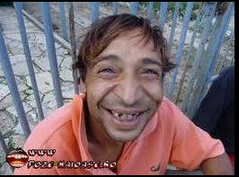
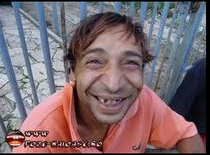

tiganii au dinti galbeni ca pisatul si nu le plac nieforri intradevar. se nasc fura fura pleace fura pleaca
in aceste poze sunt situate diferite poze la tiggani dupa cum vedeti adeneul la unul dintre ei este asa uimitor incat dinti lui sunt luat din raghalie
 
